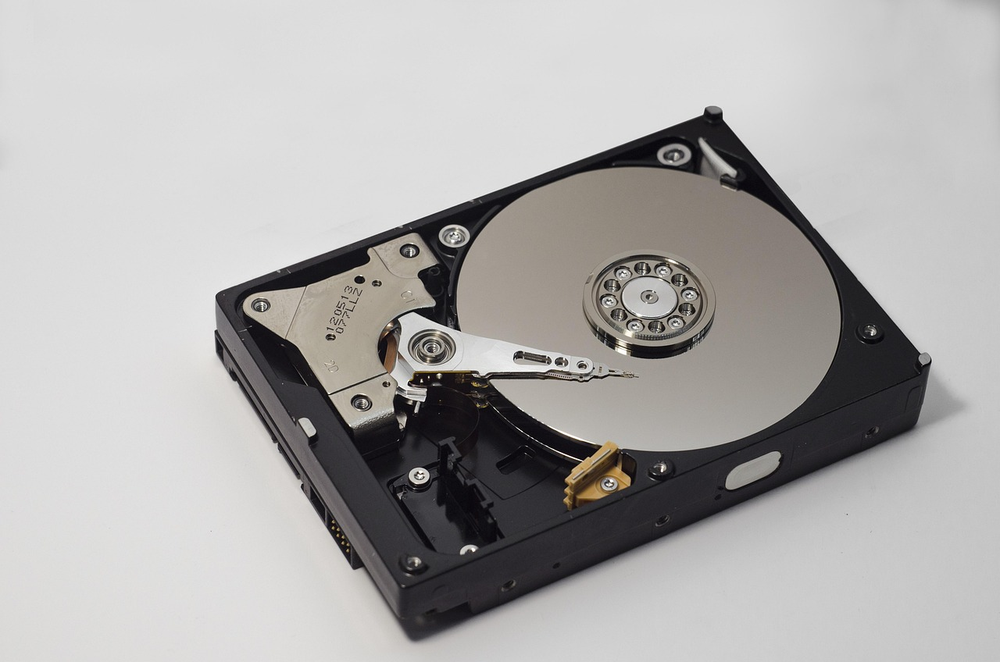
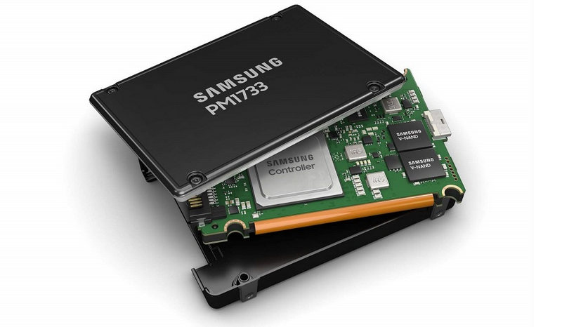
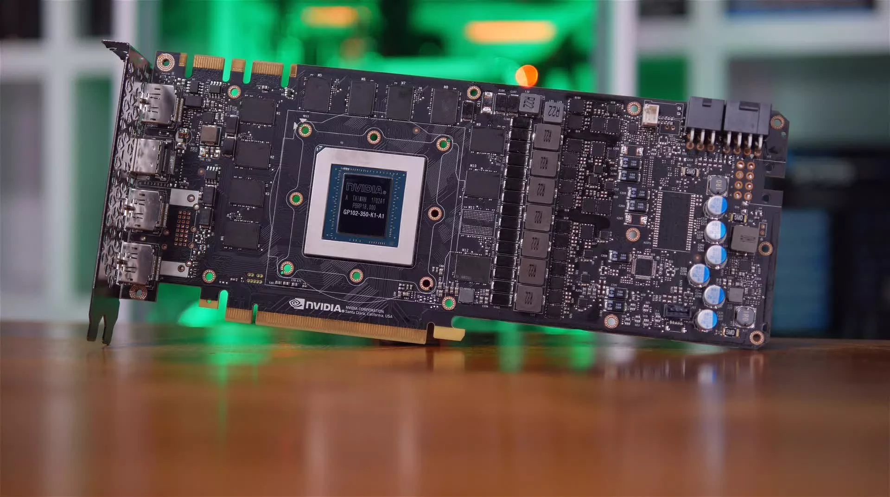
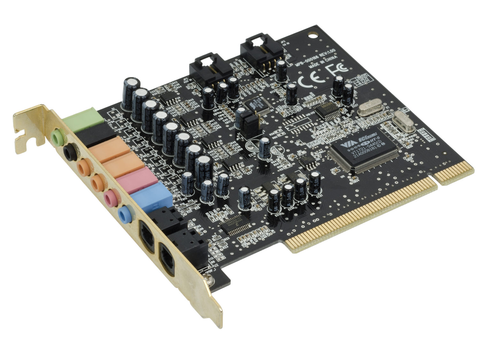

Guía Completa de Periféricos
Conocimiento técnico en profundidad
💾 Almacenamiento
Los dispositivos de almacenamiento son componentes esenciales para guardar información digital de forma permanente. Los discos duros tradicionales (HDD) utilizan tecnología magnética con platos giratorios que permiten capacidades hasta 20TB, siendo ideales para respaldo masivo de datos. Por otro lado, las unidades de estado sólido (SSD) emplean memoria flash NAND, ofreciendo velocidades de lectura/escritura superiores a 5000 MB/s, lo que las hace perfectas para aplicaciones que requieren rápido acceso a datos.

Disco Duro Externo
Un ejemplo destacado es el Western Digital My Book de 18TB, que utiliza tecnología HelioSeal para reducir la fricción de los platos, permitiendo mayor densidad de almacenamiento y menor consumo energético. Su velocidad sostenida de 250 MB/s lo hace adecuado para copias de seguridad empresariales.

SSD Portátil
El Samsung T9 Shield combina velocidad NVMe (2000 MB/s) con resistencia militar (MIL-STD-810H), siendo capaz de soportar caídas desde 3 metros y funcionar en temperaturas extremas (-20°C a 60°C). Incluye cifrado hardware AES de 256-bit para protección de datos sensible.
⚡ Procesamiento
Los componentes de procesamiento especializado descargan tareas específicas de la CPU principal. Las tarjetas gráficas modernas como la NVIDIA RTX 4090 contienen 16,384 núcleos CUDA y 24GB de memoria GDDR6X, permitiendo renderizar escenas 3D complejas en tiempo real. Por otro lado, unidades de procesamiento tensor (TPU) como el Google Coral USB aceleran operaciones de inteligencia artificial hasta 4 TOPS (billones de operaciones por segundo).

Tarjeta Gráfica
La AMD Radeon RX 7900 XTX utiliza arquitectura RDNA 3 con chiplet de 5nm, ofreciendo 61 TFLOPS de potencia bruta. Su sistema de enfriamiento vapor chamber gestiona eficientemente los 355W de consumo, manteniendo temperaturas bajo 75°C incluso bajo carga extrema.

Procesador de Audio
La interfaz Universal Audio Apollo Twin X proporciona procesamiento DSP en tiempo real con latencia de 0.7ms, permitiendo aplicar efectos de estudio profesional durante la grabación. Incluye emulaciones precisas de equipos analógicos clásicos mediante tecnología de modelado físico.
🔌 Controladores
Los controladores son programas que permiten la comunicación entre el sistema operativo y los dispositivos hardware. Actúan como traductores, convirtiendo las instrucciones del sistema en comandos que el hardware puede entender. Son esenciales porque sin ellos, componentes como tarjetas gráficas, impresoras o discos duros no funcionarían correctamente. Los controladores se actualizan regularmente para mejorar el rendimiento, añadir nuevas funciones y corregir problemas de compatibilidad.

Gestión de Drivers
El Administrador de dispositivos en Windows ayuda a ver y actualizar los controladores. Cuando un dispositivo no funciona bien, muchas veces se soluciona actualizando su controlador desde esta herramienta.

Actualizaciones Importantes
Los mandos modernos como el de Xbox Series X requieren controladores actualizados para aprovechar funciones como la vibración precisa o los gatillos adaptables en diferentes juegos.